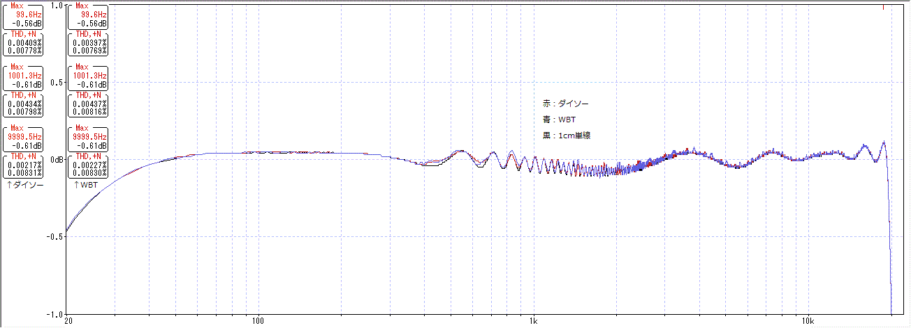

はんだの種類で音は変わるのか
2016年11月23日 カテゴリー：○○で音は変わるのか
※他の測定でわかった通り、歪率や周波数特性の測定はあまり意味がない気がしますが、失敗例として記事にしていこうと思います。音の変化には歪率や周波数特性以外の何らかの特性が関係していて、それは結局自分の耳で確かめるしかないのだろうと思います。
はんだの種類での音の違いを測定します。80穴に渡って半田ブリッジさせたものを準備しました。導線を使わず、はんだのみで基板の穴同士を繋いでいます。
写真上：100円ショップダイソーのはんだ スズ60%鉛40% 参考価格 10g\108
写真下：銀入りはんだ WBT-820 銀4% 参考価格 7g\200
これらと長さ1cmの単線とを比較します。連続で半田ブリッジさせるのはかなり難しかったです。抵抗値は両方0.2Ω以下でした。
▽結果1 擬似ギター出力を使った場合
ほとんど重なってしまって、違いがわかりません。60Hzの凸はノイズを拾っているためです。歪率も顕著な違いはありません。
▽結果2 PC出力を使った場合 ※±1dBまで拡大

やはり誤差程度の違いです。
残念ながらこの測定でははんだの種類による音の違いはわかりませんでした。まぁ私の耳では到底判別できない程度の違いということでしょうから、今後ははんだの種類や流しすぎは気にしないでおこうと思います。